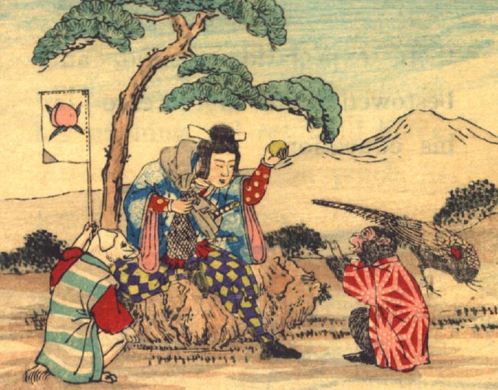

桃太郎が猿にきび団子を授けようとしている。猿は上着を着て、座って両前脚を上げ、それを受けようとしている。犬は既にきび団子をもらっていると思われ、着物を着て桃太郎の脇に座り、左前脚で旗を掲げている。雉は何も身につけないまま、桃太郎と猿の様子をうかがっている。
著作者：David Thompson／出典：親書誌：U426_nichibunken_0116：Momotaro／日付：2006／資源識別子：U426_nichibunken_0116_0002_0000
Copyright (c)2010- International Research Center for Japanese Studies, Kyoto, Japan. All rights reserved.